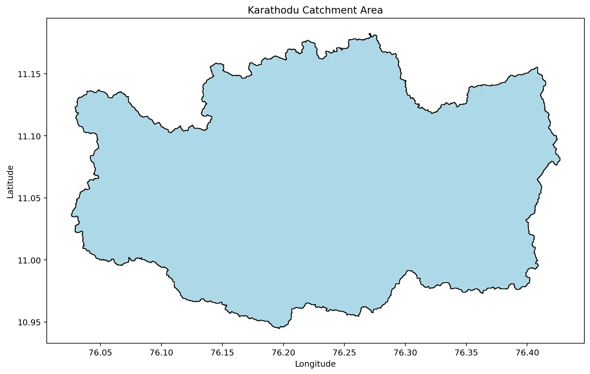
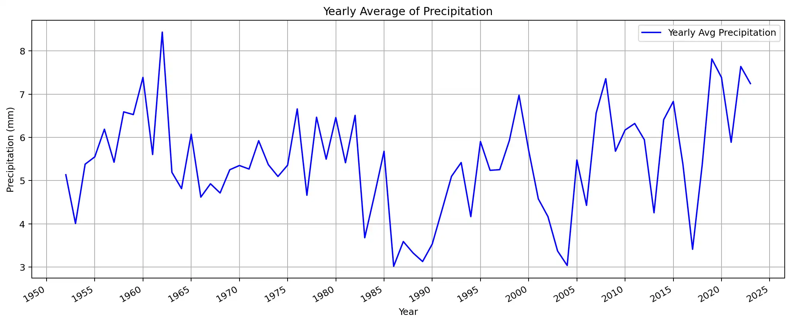
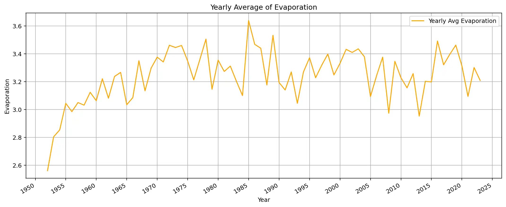
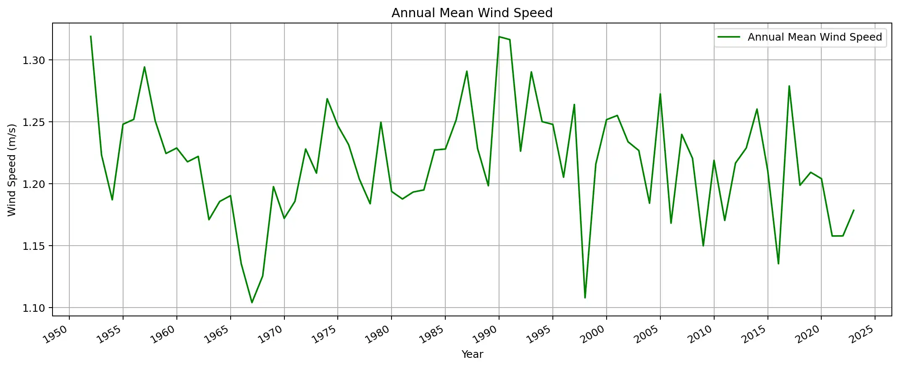
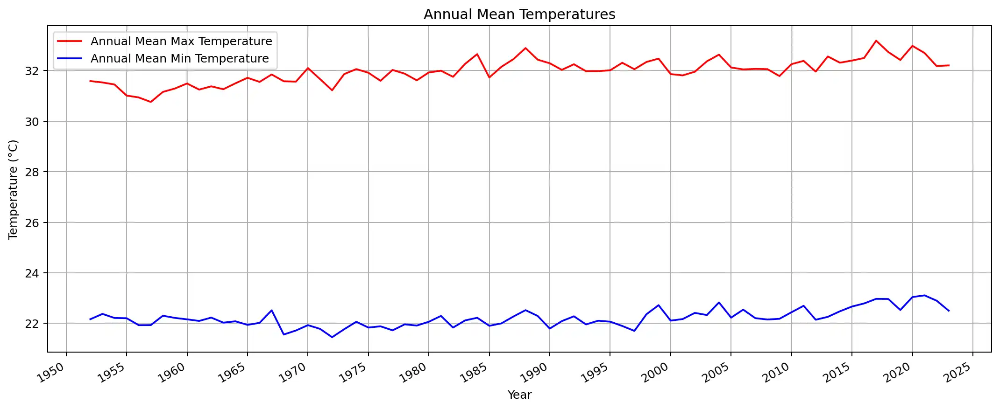
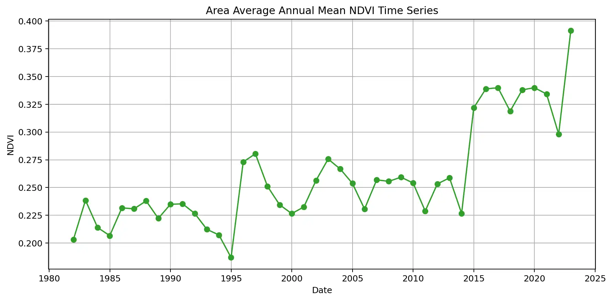

West_Coast River Basin
Karathodu
Watershed Overview
Basic Information
| Watershed Name: | Karathodu |
|---|---|
| River Basin: | West_Coast |
| Location: | 11.057, 76.039 |
| Map: | View on Google Maps |
Topographical Attributes
Watershed Area

Coordinates: 11.056944, 76.039167
Climatic Attributes
Annual Mean Precipitation
1984.035 mm
Range: 1101.383 - 3078.407 mm
Annual Mean Evaporation
1184.188 mm
Range: 934.726 - 1331.479
Mean Temperature
31.97°C
Min: 22.21°C
Mean Wind Speed
1.22 m/s
Range: 0.4 - 4.53
Annual Precipitation

Annual Evaporation

Annual Mean Wind Speed

Annual Temperatures

Geological Attributes
Groundwater Analysis

Annual average groundwater level measurements in the watershed area.
Average Level
16.25 m
Maximum Level
45.04 m
Minimum Level
13.75 m
LULC Attributes
Vegetation Index (NDVI) Analysis

Normalized Difference Vegetation Index (NDVI) annual averages. Higher values indicate denser vegetation.
Average NDVI
0.26
Maximum NDVI
0.39
Minimum NDVI
0.19